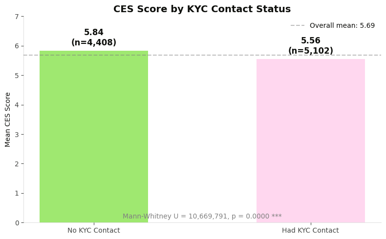
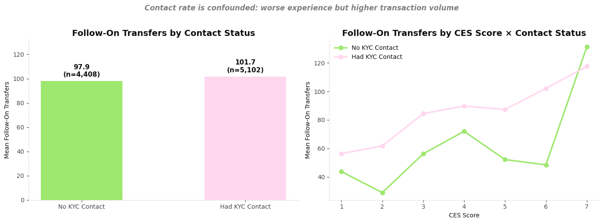
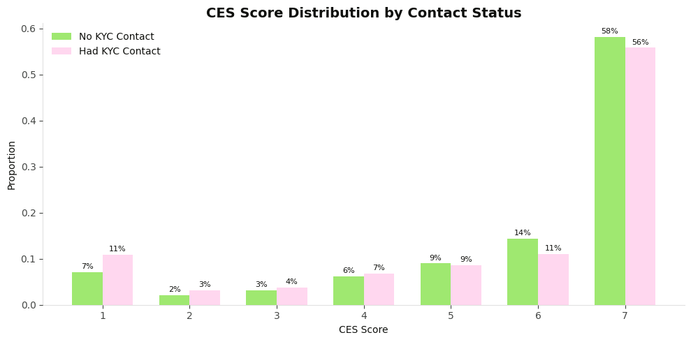
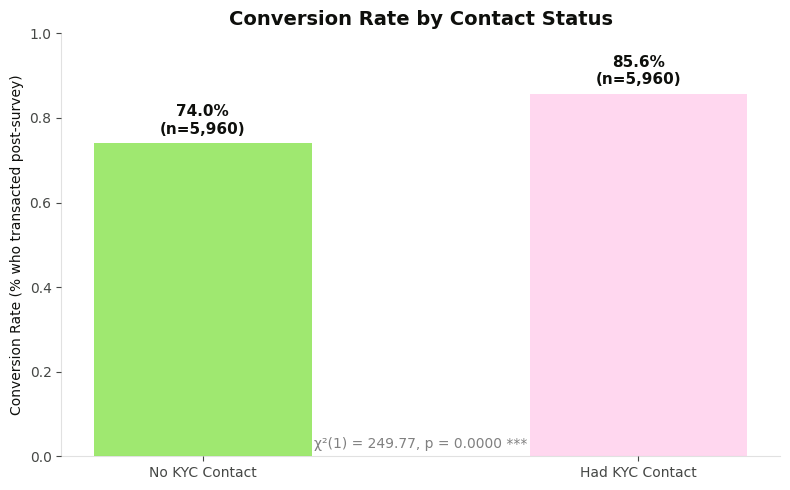
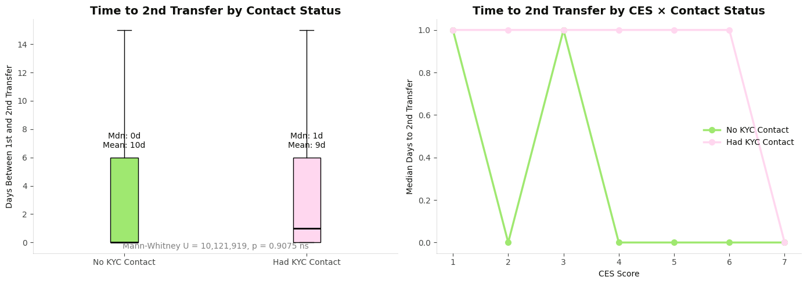

Business CES & Support Contact Impact on Follow-On Transactions
Global KYC & Onboarding — Business Verification
Bryan Carroll · June 2026 · n = 11,920 business profiles
Contact rate is confounded by intent: contacted users report worse experience (CES 5.46 vs 5.67) but make 30% more follow-on transfers. CES isolates the true friction signal that contact rate cannot.
+8.0%
Follow-on transfers per CES point
+9.4%
Follow-on value per CES point
+30.4%
More transfers if contacted (intent confound)
p = 0.44
CES × Contact interaction (not significant)
Key Findings
Outcome
Signal
Notes
CES → follow-on transfer count
+8.0% per point ***
NegBin model, n=9,409
CES → follow-on transfer value
+9.4% per point ***
Gamma GLM, n=9,034
KYC contact → transfer count
+30.4% ***
Intent confound — not a friction signal
CES × Contact interaction
ns (p=0.44)
CES slope identical regardless of contact
Contact → conversion rate
Higher for contacted
χ² significant — intent dominates
Contact → time to 2nd transfer
Contacted users slower
Hesitancy visible in timing, masked in volume
The Paradox: Worse Experience, More Transactions
Users who contacted KYC support report statistically significantly lower CES scores — indicating worse experience. Yet they go on to make more follow-on transfers and convert at a higher rate.

Contacted users report lower CES (5.46 vs 5.67), indicating worse perceived experience during onboarding.
Why? Users who reach out to support during business verification have higher underlying intent — their business need forces them to persist through friction. This intent confounds contact rate as an experience proxy.

Left: Contacted users make more follow-on transfers. Right: CES predicts outcomes in both groups, but the contacted baseline is shifted up by intent.
CES Distribution & Conversion

CES distribution by contact status — contacted users have a slightly heavier left tail (more low scores).

Conversion rate (proportion who transacted post-survey) is higher for contacted users — further evidence of the intent confound.
Time to Second Transfer: The Hesitancy Signal
While volume metrics are confounded by intent, timing reveals the true friction cost. Contacted users take longer to return for their second transfer — the bad experience creates hesitancy even though intent eventually brings them back.

Left: Contacted users have a longer gap to 2nd transfer. Right: At CES=7, both groups converge — excellent experience eliminates hesitancy regardless of contact history.
The CES=7 convergence is the key insight. When experience is excellent, it doesn't matter whether you had a support contact or not — the hesitancy disappears. Contact only creates drag when paired with mediocre or poor experience.
Regression Models
Follow-On Transfer Count (Negative Binomial)
Model type: NegBin (n=9,409, followon_count winsorized at p95=336)
Parameter Coef Rate Ratio p-value Sig
----------------------------------------------------------------------
CES_SCORE 0.0766 1.080 0.0000 ***
HAD_KYC_CONTACT 0.2655 1.304 0.0000 ***
C(PLATFORM)[T.WEB] 0.0774 1.080 0.0424 *
→ Each +1 CES point ≈ +8.0% more follow-on transfers
→ Having a KYC contact (holding CES constant) ≈ +30.4% more follow-on transfers
Follow-On Transfer Value (Gamma GLM, log-link)
n=9,034, winsorized at p95=£1,063,331
Parameter Coef Multiplier p-value Sig
----------------------------------------------------------------------
CES_SCORE 0.0900 1.094 0.0000 ***
HAD_KYC_CONTACT 0.2316 1.261 0.0000 ***
C(PLATFORM)[T.WEB] 0.3366 1.400 0.0000 ***
→ Each +1 CES point ≈ +9.4% more follow-on transfer value
→ Having a KYC contact (holding CES constant) ≈ +26.1% more follow-on value
Interaction Model (CES × Contact Status)
Model type: NegBin (n=9,409)
Parameter Coef Rate Ratio p-value Sig
---------------------------------------------------------------------------
CES_SCORE 0.0839 1.088 0.0000 ***
HAD_KYC_CONTACT 0.3361 1.399 0.0006 ***
CES_SCORE:HAD_KYC_CONTACT -0.0123 0.988 0.4444 ns
Stratified CES effect:
Not contacted: +8.8% per CES point
Contacted: +7.4% per CES point
→ Interaction NOT significant: CES slope is the same for both groups.
→ Contact status shifts the baseline (intent) but doesn't moderate CES → outcomes.
Interpretation
Intent vs. Experience
Intent determines whether users come back. Experience determines how quickly.
Support-seeking users have higher underlying intent (business need forces them to use Wise), so their total transfer volume ends up higher despite worse experience. The experience/friction signal appears in:
Reduced median CES for contacted users
Longer time to second transfer (hesitancy)
The CES=7 convergence — when experience is excellent, contact history stops mattering
Why Contact Rate Fails as a Proxy
Conflates intent with experience — high-intent users contact support and transact heavily
True cost of poor experience isn't visible in volume (intent masks it) — visible only in time to return
CES captures the friction dimension that contact rate cannot isolate
Caveats
Observational — contact status is not randomly assigned; contacted users differ in intent and complexity
CES is measured at a single point during onboarding drop-off; does not capture full longitudinal experience
Sample limited to users who received and responded to the drop-off survey (selection bias)
No controls for business size, industry, or country
Follow-on window is unbounded — later analysis should cap at 30/60/90 days
Implication
Contact rate conflates intent with experience and cannot serve as a standalone proxy for user friction. A direct, validated experience measure (CES) is required to isolate the friction signal. This supports the case for maintaining CES measurement in the Business Verification onboarding flow.